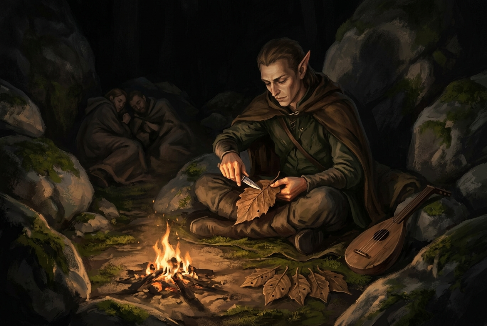

Meu nome é Rastar Murafá, filho de Rush Murafá, neto de Rush Murafá, e sou o único elfo que os anões da cidade subterrânea aceitaram entre eles. Fui estrategista lá dentro. Digo isso a quem me pergunta e a quem não pergunta, e em Malpetrim isso não me serviu para absolutamente nada.
O ferreiro cuspiu no chão antes de me ouvir terminar.
Não era grosseria dele. Era a cidade. Malpetrim é uma cidade portuária que, em qualquer semana do ano, tem mais aventureiro do que morador — gente que chega, conta o que fez, e vai embora antes que alguém confira. Quem vive ali aprende a régua: para cada coisa verdadeira que se ouve numa taverna, duas ou três são falsas. Não se pergunta se o sujeito está mentindo. Pergunta-se qual parte.
Eu cheguei ali sem nada. Fui assaltado na estrada e levaram tudo, inclusive minha arma de fogo, que era a única coisa que eu sabia usar de verdade. Sobrou o bandolim. Toquei nas ruas por três moedas de cobre e uma de prata, com o chapéu no chão, enquanto a cidade inteira montava barracas para a grande feira que ia começar dali a alguns dias.
A feira nunca começou. É bom dizer isso logo.
O contrato
Na noite em que quatro homens de clava invadiram a taverna onde estávamos hospedados, nós os derrubamos. A milícia chegou depois — e eu reparei nela, porque reparar é o que eu faço. Não era exército. Não tinha o passo de exército, nem a idade de exército, nem o silêncio. Traziam o símbolo da cidade e pouco mais. Num lugar feito de aventureiros, imagino que a guarda também seja feita deles.
O oficial se chamava Tônio. Agradeceu, explicou que a força estava esticada por causa de ataques de goblins nas fronteiras, e ofereceu o que tinha: cuidados médicos no quartel e um contrato. Quinze peças de prata por semana. A milícia não se responsabilizava pela nossa morte. O que encontrássemos com malfeitores, provada a culpa, seria nosso.
Assinamos. Eu pedi acesso ao armamento, porque eu queria melhorar o equipamento deles, e me disseram que eu era novo demais na corporação para isso. Que mostrasse valor primeiro. Achei justo e continuei achando errado.

A estrada
O serviço era simples: portão sudeste, ver o que eram os assaltos.
Os relatos que a guarda nos repassou já vinham engordados pela própria cidade. Goblins de dois metros. Um goblin de três olhos. Duas ou três são falsas, lembrei, e fomos.
Na mata os galhos estavam quebrados de fresco. Depois o barulho veio — e veio de todos os lados ao mesmo tempo, que é a pior coisa que um barulho pode fazer. Três de nós conseguimos sumir nos arbustos. Um ficou no meio da estrada, sozinho, e recebeu a emboscada inteira em cima dele.
Não sou combatente. Digo isso sem vergonha: minha função ali era ver e anotar. Vi. Matamos todos, menos um, que fugiu para o sudeste. E aí fizemos a coisa mais cara da noite sem perceber que era cara: um deles ainda respirava, e nós tentamos salvá-lo para perguntar de onde vinham.
Abrimos o que julgávamos ser a artéria rompida. Não estava rompida. Rompemos nós. Ele morreu ali, entre duas pessoas tentando emendá-lo com as mãos, e com ele morreu a única boca que podia responder qualquer coisa.
Acampamos num anel de pedras com uma entrada só. Enquanto os outros dormiam eu trabalhei, porque não consigo não trabalhar. Projetei uma besta de repetição, que existe até hoje em desenho e nunca existiu em metal. E, como eu não tinha papel nem tinta — tinta é coisa de nobre, e eu tinha vendido tudo que era meu —, comecei a escrever furando pequenos buracos em folhas secas. Um sistema meu. Rirem de mim não me tirou o sono.
O que me tirou o sono foi o barulho, de madrugada, vindo da direita.
O atalho
Um de nós garantiu conhecer um caminho mais curto. Fomos atrás. Eu perguntei se ele tinha certeza absoluta, e ele disse que conhecia um atalho, que não é a mesma coisa.
O atalho nos colocou atrás do exército.
Vou registrar o número, porque é para isso que serve o registro: eram centenas, e depois eram mais que centenas, e ao amanhecer eu já tinha entendido que a diferença entre trezentos e dois mil, quando eles marcham na mesma direção que você, é apenas quanto tempo você vai levar para morrer. Marchavam para Malpetrim.
Corremos. Chegamos ao portão com meia hora de vantagem, gritando que fechassem, e fechamos.
Entreguei meu relatório a Tônio. Estava tudo lá: onde nos emboscaram, quantos eram os primeiros, a direção, o que ouvimos no escuro. Tudo, menos a única coisa que importava.
As duas horas
Passou uma hora. Passaram duas.
Não veio nada. Nenhum tambor, nenhuma poeira no horizonte, nenhum grito. E devagar, na muralha, as pessoas começaram a olhar umas para as outras do jeito que se olha para quem fez barulho à toa.
Tônio veio até mim e perguntou se eu tinha certeza do que tinha visto.
Foi aí que eu entendi a cidade de verdade. Não havia como provar. Não trouxemos cabeça nenhuma. Não trouxemos prisioneiro — matamos o nosso com as próprias mãos, tentando salvá-lo. Eu tinha um relatório escrito por um elfo desconhecido que se apresenta recitando três gerações do próprio nome, numa cidade onde, para cada coisa verdadeira, duas ou três são falsas.
O que eu tinha era o estado em que nosso companheiro samurai voltou. Foi o que eu ofereci: se quatro deles quase o mataram, imagine uma coluna inteira. Tônio olhou para ele, ficou sério, e voltou para o posto dele sem dizer mais nada.
Mandaram um grupo de guardas sair a pé para conferir.
Voltou metade.
O cerco
Depois disso a cidade acreditou de uma vez, e foi bonito da pior maneira. Gente subiu na muralha — e muita daquela gente não era milícia. Eram os próprios moradores, que naquele lugar quer dizer: aventureiros que por acaso estavam na cidade quando a coisa aconteceu. Vieram com o que tinham.
Caiu a noite e apareceu, entre as árvores, um mar de tochas. Depois vieram os tambores.
A primeira saraivada nossa derrubou muitos, porque eles vinham em massa e em massa não se erra. A segunda já foi trocada, e aí começou a doer. Trouxeram um tronco de árvore e começaram a bater no portão, e o portão é de madeira, e madeira racha.
Eu desci. Não sou combatente, mas sou um homem que sabe o que arde.
Achei um mercadinho vazio, peguei óleo de lamparina, deixei duas moedas de ouro no balcão porque não sou ladrão por mais que a mesa insista que sou, subi de volta e joguei o balde nos que seguravam o tronco. O Ninho acendeu as flechas. Uns vinte pegaram fogo, largaram a madeira e correram uns para dentro dos outros, e as batidas pararam.
Alguém sugeriu incendiar a floresta inteira. Alguém invocou Lihanna. O elfo que eu sou percebeu, no meio da própria frase, que não faria aquilo — e não fiz.
Escoraram o portão com vigas. Propuseram arrancar a porta da igreja e foram lembrados de que atrás dela havia mulheres e crianças. E então alguém amarrou duas lanças uma na outra e enfiou o conjunto pela rachadura do portão, no meio de quem segurava o tronco do outro lado, o que é a coisa mais engenhosa que eu vi um combatente fazer em duas semanas de convivência com combatentes.
O portão caiu mesmo assim.
Entraram. Os clérigos da cidade passaram levantando os caídos em fila, e por um tempo pareceu que ia dar. Eu fiquei atirando de cima enquanto deu, e depois desci, e depois recuei atirando, e depois vi um dos meus cair atrás de mim.
Virei para ir buscá-lo.
Foi quando senti o corte nas costas.